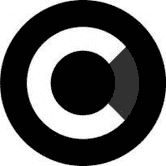 CSW CASH CSW 具有美元分红、动态 ARP 和 3 级推荐计划等创新功能。 CSW 具有美元分红、动态 ARP 和 3 级推荐计划等创新功能。预售期间筹集的所有加密货币构成项目的资金。每
CTENA Finance 使用新的 CTENA dApp，您可以：I) 购买 CTENA 代币 II) 质押代币 III) 投资我们的 DeFi Vault IV) 投资我们的 CTENA 指数基金 [beta]： CTENA 是具有自动流动性和燃烧功能的传统代
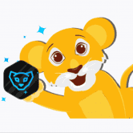 Cubfinance Cubfinance 的母公司 Leofinance 是一个成熟的项目，在构建基于区块链的应用程序方面拥有 2 年的跟踪记录。如今，DeFi Yield Farming 应用程序只有一毛钱。 Cub Finance 与众不同，因为它是
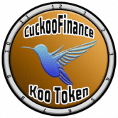 CuckooFinance 农业起始块：#20880000 链：多边形 预计目标日期：2021 年 11 月 2 日星期二 00:42:49 UTC 没有预售。您只能在 QuickSwap 上购买 CUCKOO 什么是杜鹃？ Cuckoo 是一种去中心化的
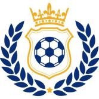 Cup.finance 今天，我们很高兴地宣布 Cup.Finance 的 alpha 版本发布——以太坊区块链上的去中心化体育数字资产市场。 Cup.Finance旨在成为以流行体育牌照为核心的基于区
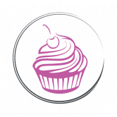 Cupcake Finance 月亮是煎饼做的。 在银河系中最受欢迎的去中心化平台上交易、赚取和赢取加密货币。 被数百万人使用。 数以亿计的信任。 PancakeSwap 拥有任何去中心化平台中最多的用
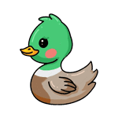 Cute duck finance 简介 特点 Cute Duck Finance 是一个去中心化的多链农场收益项目，在币安智能链、Polygon（即将推出）和 KuCoin Chain（即将推出）上运行。 CDUCK Finance 将提供这些服务
Cutey Cutey 是一个 Polygon 收益农业项目，具有低排放率、高收益和 30,000 个 CUTE 代币的有限上限。 Cutey 是一种不太常见的 cutie 拼写——一个被认为可爱或有吸引力的人的非正式词。它可
Cycle Finance Cycle Protocol 是一个收益优化器，允许您从 Avalanche C 链的各种 DEX/项目中自动组合奖励，并附有它自己的流动性挖掘程序。 我们还有一个独特的 ZAP 功能，允许用户存入（
Cyclone Protocol Cyclone 是一种具有去中心化治理的跨链、非托管、通用隐私保护协议。 Cyclone 应用 zkSNARKs 通过打破存款人和收款人地址之间的链上链接来为所有 DeFi 组件启用交易隐私。它使用
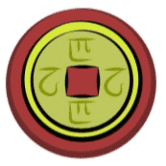 Czodiac CZodiac 是一个基于 BSC 的 defi、nft 和游戏平台。它使用 multidex LP 农业系统，允许用户通过存入 LP 来赚取通货膨胀的 CZFarm (CZF)。 CZodiac 还提供反倾销保险库，用户可
DankSwap DankSwap 是币安智能链（从 PancakeSwap 分叉）上的一个自动化做市商和收益农业平台。 DankFarms 和 DankPools 可用于赚取 $WEED，即 DankSwap 的本地货币。 URL 检查器是一个免费工具，用于检测恶
Dante Finance 未来用例 Dante Finance 是 Tomb Finance 的一个分支，因此我们决定支持它，将 $DANTE 与 $TOMB 挂钩 DANTE 是一种与 TOMB 挂钩的算法代币。该协议的底层机制动态调整 DANTE 供应量，使其价格相对于 TOMB
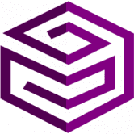 DAOventures DAOventures 是一家 DeFi 基金经理，为投资者提供最先进的盈利 ETF 策略。自动化 DeFi 投资组合策略的首选投资平台，无论您是 hodler、DeFi 新手还是机构基金经理。
DAPPCLUSTER DApp集群 DAppCluster 是一个基于以太坊区块链的自动复合智能合约。该平台已被编码为优先考虑高级别的安全性和安全性。 DAppCluster 是由重视通过智能合约技术进行的长期
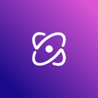 Dark Matter Defi 创始人代币 Founders Token (FT) 是我们授予早期采用者、社区成员、志愿者和团队成员的第一个暗物质 NFT。代币被分发，它们在发布前的比赛中获胜，或者它们被给予购
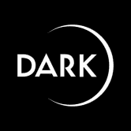 DarkBuild 传统的质押涉及将代币存入合约并在一段时间后接收另一个代币。通过 DARK 质押，我们最初将同时奖励 6 个代币给 DARK 质押者： DARK（可转换 1:1 到 DARK） s
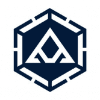 DarkCrypto Finance DarkCrypto 协议是第一个与 CRO 挂钩的算法令牌，能够生成在 Cronos 网络上运行的 DARK 令牌。 它涉及一种创新的解决方案，可以确定性地调整稳定币的供应量，使稳定币的价格朝
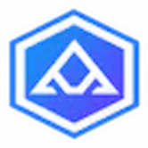 Darkness Finance DarkNess Dollar 是一种稳定币，其部分供应由抵押品和部分供应算法支持。这意味着 DarkNess Dollar 是一种稳定币，其部分供应浮动/无担保。 抵押和算法的比率取决于市场对 DarkNess Dollar 稳
CryptoSwap BSC 上最热门的新 AMM！通过收益耕作赚取 CST，然后将其投入 Csyrup Pools 以赚取更多代币。交换、质押和赚取 - 一切尽在您可以的平台上 CryptoSwap 引入了平衡流动性和时
Crystl Finance 安全 贸易 Crystl Finance 是 Polygon 和 Cronos 上的去中心化收益最大化工具。我们是 ApeSwap 的官方合作伙伴 由 Crystal Crew 打造，我们拥有一支致力于发展 Crystl 生态系统的专业团队。 特征 使用高 APY 保
bomb.money bomb.money 是一种算法币，其工作方式与 Fantom 上的 tomb.finance 非常相似。 我们有我们的主要货币 BOMB，它以 10,000 比 1 的比率与 BTC 挂钩。 这使我们的核心
Boolish Boolish 是同类产品中首个用于 Cronos 区块链的投资组合跟踪器和图表应用程序，可让您轻松查看钱包中的所有代币及其美元价值。 旨在为习惯于 Poocoin 用户界面的 meme-coin 投资者顺
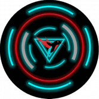 BlackBird BlackBird Finance，一种由 Cronos Network 提供支持的新 Defi 协议，为 Cronos 的 Defi 社区提供令人兴奋的功能，以获得更好的收益和利润。 克罗黑鸟✅ 更新：团队进行了双重检查，
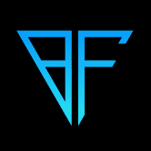 BlackFort Token 使用 BlackFort 钱包，您可以存储、管理、购买、更改并提取您的加密货币。 BXF 代币的使用： 无论您购买、出售或兑换货币，您都可以获得 高达 25% 产生的费用作为在 ET
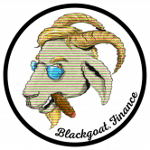 BlackGoat Fantom Network 中革命性的 DeFi 平台，下一代去中心化金融 (DeFi) 和农业收益应用程序，建立在高收益特性之上，我们确保收益的初始策略是使用不同的工具（破坏供应、提高奖
Blastoff Finance Blastoff Finance 是市场上最完整的 RFI 静态反射代币，也是同类中第一个向 NFT 所有者分配奖励的代币。 使用 BLAST 代币进行的每笔交易都会产生 10% 的税，分为以下费
Bliss.Finance Bliss.Finance 是一个具有真实用例的 defi。 Bliss 生态系统包括 Bliss Finance、Bliss Casino 和 Bliss Chain。 在 Bliss Finance，您质押 TRX 并赚取 BLI。 在 Bliss C
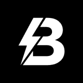 Blitz Labs Blitz Labs 是一个 WEB3 集体，致力于开发使基本加密活动（例如但不限于参与预售、交换代币、桥接）尽可能简单且没有不必要复杂性的工具、服务和产品。 Blitz Labs 的最终
Blizzard Money V2 Blizzard Money 是币安智能链（从 Pancakeswap/GooseDefi 分叉）上的收益农业和 Staking 平台。 我们拥有一支由经验丰富的 Yeti 组成的专门团队，他们多年来一直从事加密货币行业，并且坚信安全农业
BLIZZARD.MONEY Blizzard.Money 是币安智能链（从 Pancakeswap/GooseDefi 分叉）上的收益农业和 Staking 平台。 我们拥有一支由经验丰富的 Yeti 组成的专门团队，他们多年来一直从事加密货币行业，并且坚信安全农业。
BlockBank CeFi DeFi 银行业务 Robo-Advisory 托管钱包将服务于许多不同的目的，例如质押、存储资产、通过 API 交易到 CEX、为资产提供保险、借贷、法币开/关（链下/链上）以及 KYC/AML 非
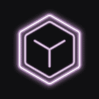 BlockBlend BlockBlend 超越常规，提供非 KYC、多交叉区块链交易，每次交易最多可发送 5 个目标钱包。您可以发送 $ETH &接收 $BNB 或任何其他受支持的区块链 &仍
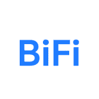 BiFi BiFi 是第一个基于通用多链中间件 BIFROST 的多链 DeFi 平台。 在 BIFROST 的多链技术的支持下，BiFi 连接到以太坊、币安智能链 (BSC)、Avalanche、Klay
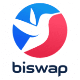 Biswap Biswap 的优势包括： BSW 是在币安智能链网络上推出的 BEP20 代币。 它是 Biswap 的主要资产。 Biswap — 币安智能链上的第一个 DEX，具有三类推荐系统，业内费用最
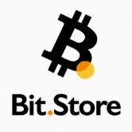 Bit.StoreSwap Bit.Store 是世界上第一个提供加密货币交易、SocialFi 功能和集成法定加密货币入口/出口功能的 Web3 投资平台。 该平台通过与广泛的区域支付提供商网络合作